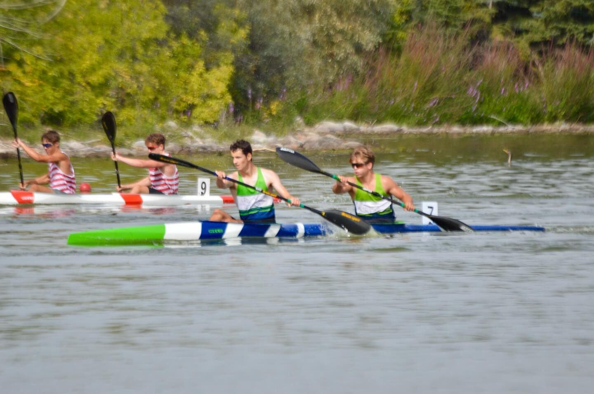
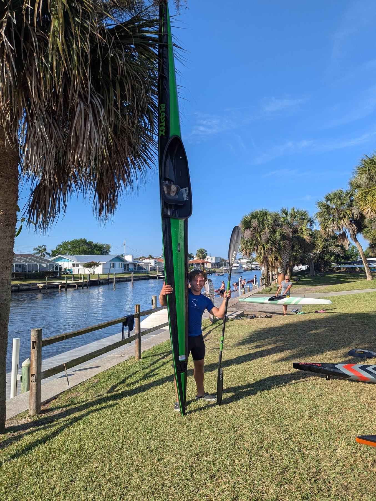
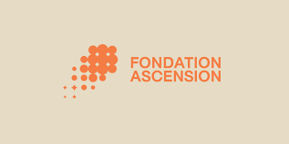
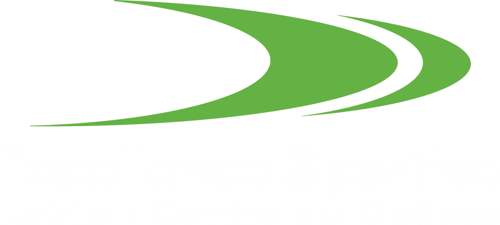

Mes valeurs
Esprit d’équipe, détermination, respect.

Kayak de vitesse · Athlète
Une ligne d’eau. Des repères. Une trajectoire : la tienne.

Kayakiste de vitesse
Le regard sur l’arrivée. La pagaie dans l’eau. À fond.
En kayak de vitesse, tout se joue dans l’équilibre entre puissance, technique et timing. Des premiers coups de pagaie au sprint final, chaque détail compte. Ici, je partage mes entraînements, mes compétitions et le chemin vers mes prochains objectifs.
Bilan · 2024 — 2026
Julien Pomerleau · Club de canoë-kayak Lac-Beauport. Toutes les courses validées de la bible des résultats, des essais provinciaux aux championnats nationaux.
Camps d’entraînement
L’athlète, mais aussi la personne
La performance ne se construit pas seulement sur l’eau. La curiosité, la constance et le plaisir de progresser font aussi partie du voyage. Cette section est à toi : raconte ce qui te motive, tes études ou ton travail, tes passions et les personnes qui t’inspirent.
Esprit d’équipe, détermination, respect.
Ajoute ici tes passions, tes études ou ton quotidien.
Le plaisir de me dépasser et de partager l’aventure.
Aller plus loin, ensemble
Derrière chaque départ, il y a une équipe. Merci à mes partenaires pour leur soutien à mon parcours de kayakiste de vitesse.
Devenir partenaire →Mes partenaires actuels


Engagement · Confiance · Ambition
On en parle ?
Partenariat, compétition, presse ou projet autour du kayak de vitesse ? Écris-moi, je serai ravi·e d’échanger.
contact@votre-domaine.fr →